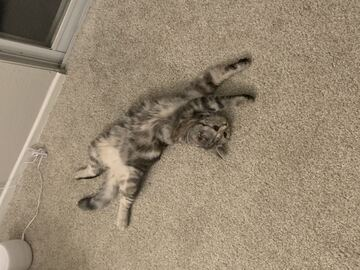
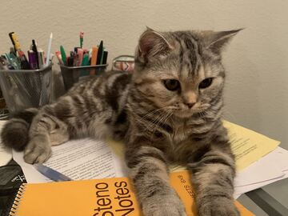
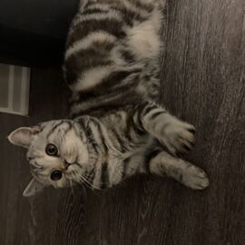
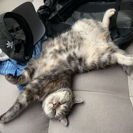
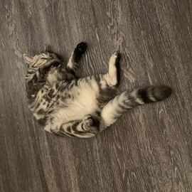
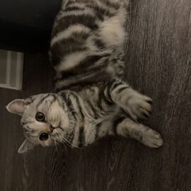
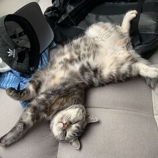
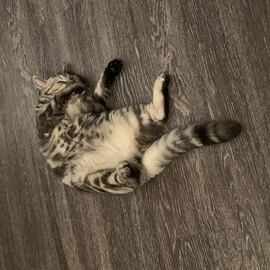

Yingshi Li
I born in Guangzhou, China. When I was sixteen, I move to the United States. I was living in the San Mateo which is around 30 mins driving from the San Francisco downtown.
When I still live in China, I already love animals. I had two dogs before, one is Pomeranian, other is a poodle. After I moved to the United States, I decided to feed a cat. The reasons of feed
a cat instead of dog are, I want to tried different kind of animals. And also, dog I need to walk them everyday, since college become more busy, I think I don't have that much time.
I choose for a long time, at the end, I choose Short British Hair cat, which is the profile picture's cat. right now, he is almost one year old. I think when he was around two
years old, I will buy another cat. His name is TUOTUO, in Chinese we call him “火锅”, it means hotpot in English.TuoTuo loves eating and sleeping. Most of times, he likes to lay
on the ground and watching us. But when we open his snack bags or grab his bowl, he will come really quickly. At night, when we are watching TV or playing veido game, he will come with us.
Since that, my dream is to be a cat cafe owner. I went to the Cat Cafe before. In the Cafe, I saw around ten to twenty differece types of cat.They all look really cute and also
close to the people. They love us to touch them and play with them. Most of the people who come to the cat cafe more focus on the cat instead of the food. So, it is more easy to
take care, do some delicious food instead of create by your own. The reason of I want to open a cat cafe, not just because I love cats but also I love cooking.
My dad was a chef when he was young. He had been a chef for ten more years. In his own words, I can do anything you want. Base on this situation, I always can taste new food. During
the Weeekend, I would like to ask my dad to teach me some. Now, most of the food that I love, I can cook it by myself. During summer times, I would went to learn some dessert like cake
and cookie. some time, I will invite some friends for dinner in terms of getting more suggestion for my food. since that, I hope I have more chance that I can cook for other person. I think
cooking is really fun thing. Some people will say, it will let you getting tried and dirty. But for me, I think is a hobby that make me relx. I really enjoy cooking, at the same time, my dad
always wants me learn more. So my parents both really support me for this. Overall, to have own cat cafe become my biggest dream right now. becasue it can make my hobby become my career.
Experience
student organization
• organization president assistant
• learned how to manage event
Education
University of California Riverside
Portfolio








